【一つ新しい記事】
【観光】
島根県出雲市大社町杵築東195
旧正月に出雲大社で初詣です。
2017/01/28
お正月にお参りしていなかったので、旧正月に初詣です。
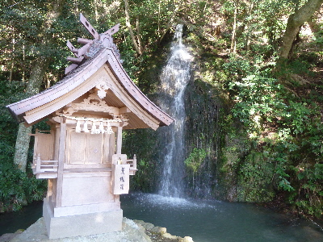
まずは北島さんです。
天気が良かったですが、滝があるせいか少しひんやりしていました。なんかスッキリした気分になれました。
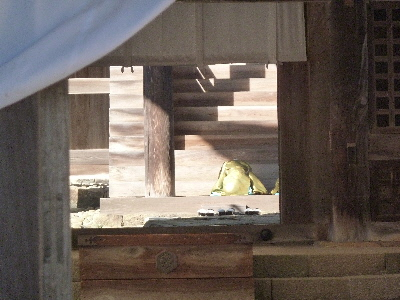
出雲大社本殿では祭事をやっていました。
正面からと、本殿横から様子が少し見れました。
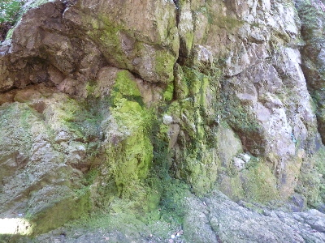
本殿裏の目の神様にもお参りしました。
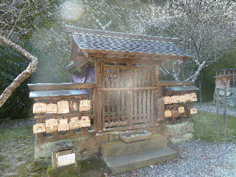
神楽殿奥の天満宮です。
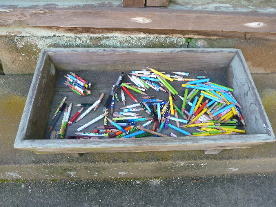
ここの天満宮には使い終わった鉛筆が供えてあります。
普段鉛筆使わないですが、これを見ると鉛筆使って持ってきたいなって思います。
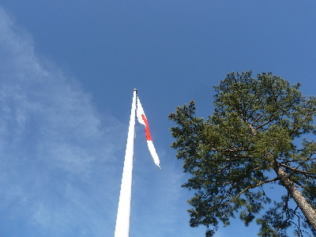
今日は天気が良かったので、大きい所も小さい所も沢山お参りできました。
今年一年いい年になるといいな。
世界糖尿病デーで出雲大社ブルーライトアップ
2015/11/14
今日は全国糖尿病デーのイベントが出雲大社でありました。
会場では、血液から血糖値を調べてもらいました。
私は少し高いみたいです。
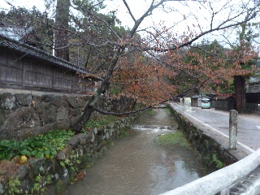
夕方なので写真が暗いですが、紅葉してて綺麗でした。
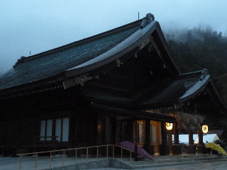
日が落ちてくると、雨が降り出しました。
靄がかかって幻想的です。
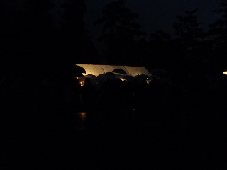
式典が始まるころにはお客さんでいっぱいになりました。
前が見えないですね。
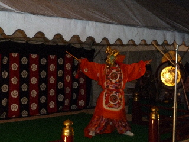
ライトアップの点灯が始まると、多くの人が大社の本殿へ移動したので雅楽の演奏と踊りが見やすくなりました。
普段見れないものが見れて良かったです。
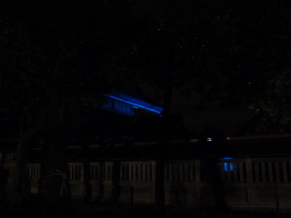
ブルーライトアップはこんな感じでした。
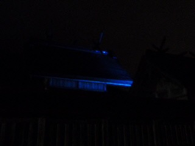
キラキラの派手派手ではなく、落ち着いた感じでした。
ゴールデンウィークは大社に行きました。
2015/05/05
近場でレジャーです。
まずは島根ワイナリーです。
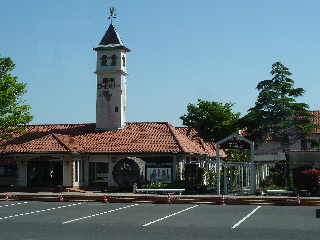
ゴールデンウィークは混雑が予想されるため、島根ワイナリーから出雲大社まで無料のシャトルバスが出ていました。
久々にバスに乗りました。
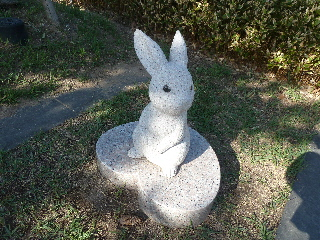
バスは歴博の駐車場に到着です。
出雲大社にも近頃いるんですが、歴博にもウサギのオブジェがあちこちにありました。
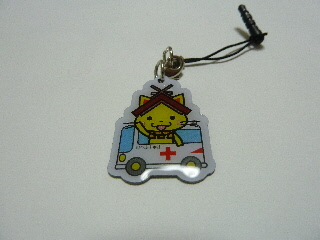
大社では献血車が来ていたので、献血しました。
記念にストラップをもらいました。
金属製でなかなかいい商品です。いいものをいただきました。
前のゴールデンウィークでも見たんですが、
今年も猿芸工房のおサルさんが来てました。
撮影禁止なので、画像はこちらでどうぞ。
猿芸工房のＨＰはこちら
http://www.engeifactory.info/index2.html
私が行った時は芸をやっていなかったんですが、
おサルのちいちゃんがとっても可愛かったです。
お猿さん見れただけでも、大社に行った甲斐がありました。
出雲大社で合格祈願はいかがでしょう。
2015/01/18
天気が良かったので、出雲大社に観光に行きました。
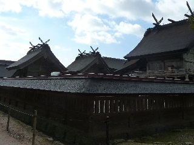
受験シーズンですね。
出雲大社の天神様に、願い事を書いた絵馬が沢山ありました。
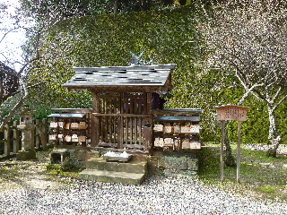
上は神楽殿の北側（山側）にある天神様です。
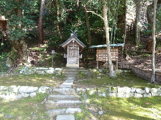
こっちは北島さんの滝のある池にある天神様です。
近くに2つあるので、両方でお願いをしてみるのはどうでしょう？
出雲大社で桜の花見をしました。
2014/04/06
夕方に出雲大社に桜の花見に行きました。
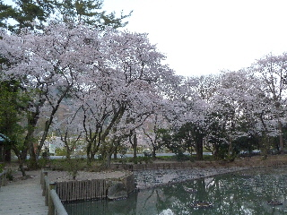
夕暮れ時の明かりがなんだか神秘的でした。
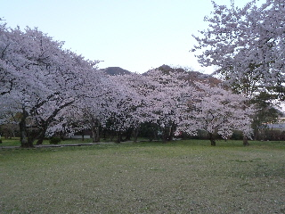
以前はボンボリがあって、夜桜を見ながら宴会してる人とかいましたが、最近はなくなりましたね。
シーンとしてて寂しいですが、これはこれでいい雰囲気で好きです。
なんとなくスピリチュアルな感じです。
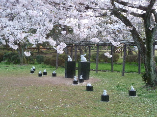
新しくウサギのオブジェが出来ていました。
しかもいっぱい！
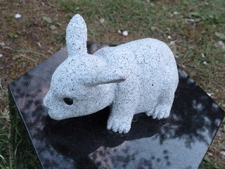
なんともぶちゃいくな子ウサギですが、とっても可愛いですね。
新しい観光スポットになりそうです。
出雲大社で散歩しました。
2014/03/09
歴博に行ったついでに出雲大社に参りました。
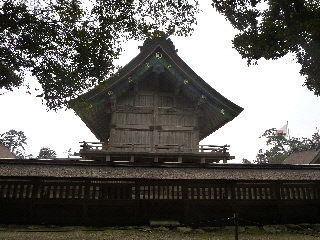
久しぶりに本殿の裏側を歩きました。
裏側からは本殿がよく見えていいです。大きいですね。
団体ツアーの方が今日は多かったですが、こっち側には来られないので、のんびりと歩けました。
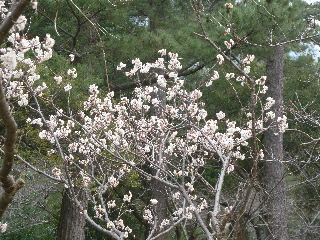
境内では梅が咲いていました。
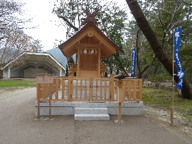
新しい御社がありました。
これは新しく出来たんですよね？前は何もなかった気がするので、建て替えじゃない気がする。
（ちょっと自信ないです。）
参拝する場所がドンドン増えたら面白いですね。
出雲大社で初詣。
2014/01/01
去年は遷宮があり、今年は最初のお正月なので、お客さん多いかも？って思ったんですがどうなんでしょうね。
行きの電車はそんなに混んでいませんでした。
良かった。
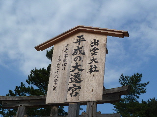
でも遷宮ってまだ終わってないんですよね。
平成28年3月までだそうです。
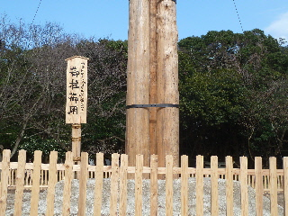
新しいオブジェがありました。
これっていつまで設置するんでしょうね？
丁度着いた時は、拝殿には参拝のひとでぎっしりでした。
これは凄い。ほとんど人の流れが動いてなかったです。
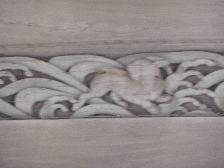
拝殿はあきらめて、本殿に行きました。
本殿の方は人の流れが良く、すんなり参拝できました。
お正月は本殿が参拝出来ていいですね。
本殿は撮影禁止なので、本殿の門のウサギの写真です。
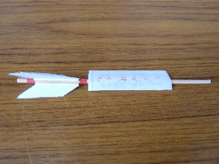
おみくじしました。
小吉で微妙な内容でした。
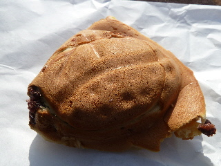
栗饅頭を屋台でかいました。
ここのは見た目がカッチリとしていませんが、生地がふんわりとしてるし、餡が沢山入っていて美味しかったです。
お店を比べて選んで良かったです。
来年もここで買おうって思いました。
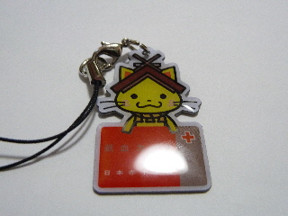
帰りに献血してストラップをもらいました。
年の初めにいいコトしました。
今年は三が日に献血があるようなので、よかったらどうぞ。
いい事すると気分がよくなりますよ。
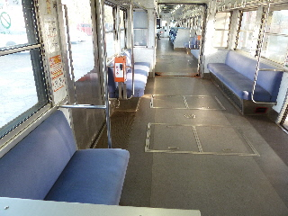
帰りの電車は前の車両が出たばっかりだったので、座って帰れました。
座って待ってる時間が長かったですが、楽ちんでした。
電車は全体的にだいぶ遅れてるみたいでした。
時刻表はあてにならないので、注意しましょう。
出雲大社は参拝者が多いですね。
2013/05/06
屋根が綺麗になりましたね。
もうすぐ遷宮です。
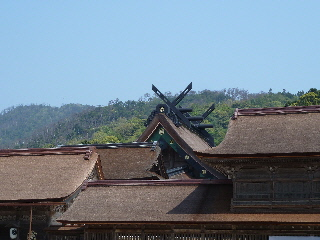
ゴールデンウィーク最終日なので人が少ないかなと思って行ったんですが、多かったです。
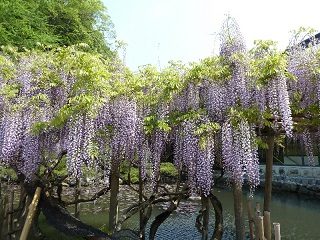
フジの花が綺麗でした。
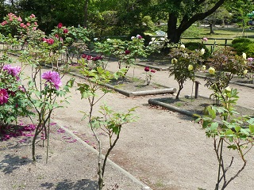
ボタン園のボタンもまだ咲いていました。
大社は色々花見が出来ていいですね。
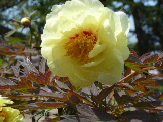
散歩に最適です。
今日は天気がいいなーって時に、ふらっと出かけるといいですよ。
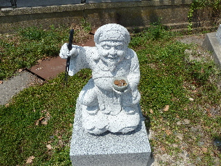
大鳥居まで今日は歩いたんですけど、鳥居のふもとに像があったんですね。
知りませんでした。
なんかとっても縁起がよさそうです。
元旦に出雲大社
2013/01/01
電車に乗って出雲大社に行きました。
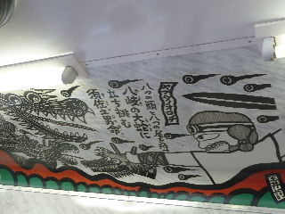
車内に神話の絵がある車両に乗りました。
巳年なので、大蛇の車両に乗れて運がいいのかな？
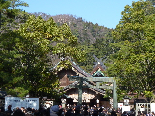
元旦に天気が良いっていいですね。
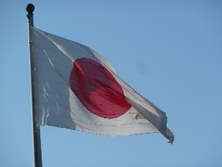
青空に国旗が揺れていました。
とっても清々しい新年で気持ち良かったです。
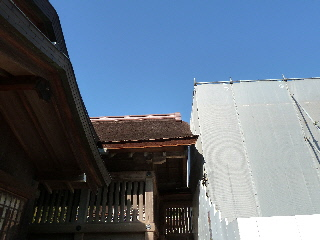
本殿はまだ工事中で参拝出来ません。
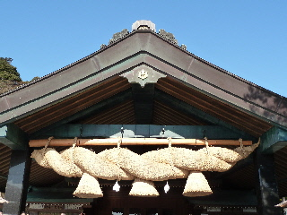
神楽殿もお参りしました。
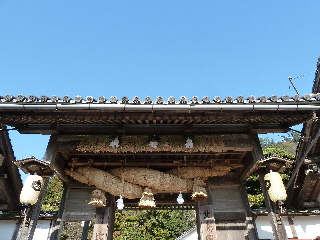
北島さんも参拝しました。
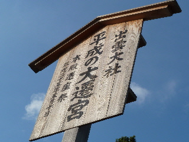
出雲大社の遷宮は5月10日なんですね。
60年に1度なので見てみたいな。一般の人は見れるか分かんないですけど。
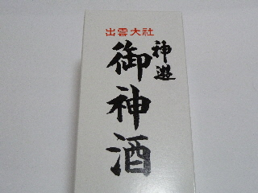
帰りに屋台で御神酒を買って帰りました。
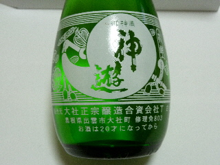
中身はこんな感じでした。
今日は天気が良かったので、色々まわれて楽しかったです。
出雲大社に車で楽に行けました。
2010/01/02
午後から天気が良かったので、初詣に出雲大社に行きました。
いつもは電車で行くんですが、今年は松江市より東が大雪なので空いているかな？って思い車で行ったら、予想通り空いていました。
ちょっと離れた場所の駐車場でしたが、待たずに駐車できて良かったです。
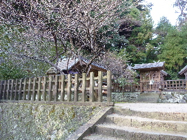
大社の天満宮がある場所ですが、私が行った時は一人も人がいませんでした。ちょっと寂しいですね。
正月しか一畑電車に乗車していない。正月は一畑電車乗るいい機会です。